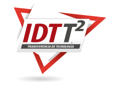

¿Cuantas veces al iniciar operaciones o realizar mantenimientos en una nueva planta o en una nueva línea de producción se han presentado diversos problemas porque el personal no tiene el conocimiento necesario? ¿No les ha sucedido que tienen manuales de operación y mantenimiento o fichas técnicas en chino, alemán que nadie entiende? Cuando se adquiere una nueva tecnología en una empresa (ya sea una nueva planta, nueva línea ó mejoras de equipos, software, etc) es necesario que el personal de operaciones y mantenimiento sea capacitado, para que esta se pueda operar, mantener y administrar correctamente. Pero muchas veces las capacitaciones de los proveedores de la tecnología son insuficientes, o la documentación esta en idiomas que el personal no domina y en los peores casos las tecnologías no traen siquiera la documentación necesaria . Por estas y muchas otras razones IDT ofrece a sus cliente el servicio IDT Transferencia de Tecnología, desarrollado e implementado con metodología propia. Abajo encontrara información sobre nuestra metodología para solucionar sus problemas.
En la primera fase de análisis tecnológico se determinan cuales son las tecnologías nuevas para el personal, siguiente se identifican cuales son los conocimientos y requerimientos para que el talento humano de la empresa opere, mantenga, y administre la planta ó proceso de producción de manera efectiva.
Con este análisis realizado, se estructura el plan estratégico de capacitación y documentación para el proyecto.
En su segunda fase se documenta la nueva tecnología en una forma clara, precisa y ordenada, acorde a los formatos y estándares que el cliente maneja en su empresa. En esta fase se elaboran los diferentes manuales y procedimientos necesarios en el análisis de tecnología (manuales de proceso, operación, mantenimiento, etc.)
La tercera fase se implementa el plan estrategico de capacitación y entrenamiento, basado en los requerimientos para que el personal pueda desempeñarse eficientemente y de forma segura en su propio ambiente de trabajo y de acuerdo a la nueva tecnología instalada.
En su cuarta fase se miden los resultados realizando evaluaciones de las tres fases anteriores, con el objetivo de verificar la efectiva transferencia de la nueva tecnología y así garantizar la operación, mantenimiento y administración efectivas de la misma.
Si desea conocer mas sobre nuestro servicio y metodología de transferencia de tecnología descargue gratis nuestro White paper: “Desafíos producto de la implementación de nuevas tecnologías”, donde encontrara mas Información.